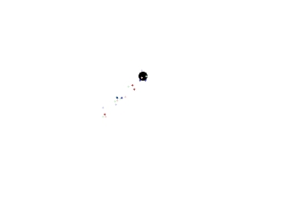

Particle Engines

Last Updated 3/28/10
Particle engines are ways to create effects like fire, smoke, or in this case a trail of sparks. Here we're going to make a very simple particle engine to surround the dot in sparks.AnParticle Engines tutorial with SDL 2 is now available.
class Particle
{
private:
//Offsets
int x, y;
//Current frame of animation
int frame;
//Type of particle
SDL_Surface *type;
public:
//Constructor
Particle( int X, int Y );
//Shows the particle
void show();
//Checks if particle is dead
bool is_dead();
};
Particles are just little animations.
We want to surround the dot with a bunch of little flashing sparks that look like this:


 So we'll create a particle class and give the dot a bunch of particles.
So we'll create a particle class and give the dot a bunch of particles.
These spark particles are real simple. They have offsets, a frame of animation and a surface.
In terms of functions they have a constructor, a function to show the spark and a function to check if the spark is still active.
These spark particles are real simple. They have offsets, a frame of animation and a surface.
In terms of functions they have a constructor, a function to show the spark and a function to check if the spark is still active.
//The dot
class Dot
{
private:
//The offsets
int x, y;
//The velocity of the dot
int xVel, yVel;
//The particles
Particle *particles[ TOTAL_PARTICLES ];
public:
//Initializes
Dot();
//Cleans up particles
~Dot();
//Handles keypresses
void handle_input();
//Moves the dot
void move();
//Shows the particles
void show_particles();
//Shows the dot
void show();
};
Here we have our good friend the dot class revised to include the particles.
bool init()
{
//Initialize all SDL subsystems
if( SDL_Init( SDL_INIT_EVERYTHING ) == -1 )
{
return false;
}
//Set up the screen
screen = SDL_SetVideoMode( SCREEN_WIDTH, SCREEN_HEIGHT, SCREEN_BPP, SDL_SWSURFACE );
//If there was an error in setting up the screen
if( screen == NULL )
{
return false;
}
//Set the window caption
SDL_WM_SetCaption( "Particle Test", NULL );
//Seed random
srand( SDL_GetTicks() );
//If everything initialized fine
return true;
}
Because we're going to need random numbers for our particle engine,
we seed random with the current time (which is a common way to do it) in our initialization function.
Particle::Particle( int X, int Y )
{
//Set offsets
x = X - 5 + ( rand() % 25 );
y = Y - 5 + ( rand() % 25 );
//Initialize animation
frame = rand() % 5;
//Set type
switch( rand() % 3 )
{
case 0: type = red; break;
case 1: type = green; break;
case 2: type = blue; break;
}
}
Here's the constructor for our particle class.
The "X" and "Y" arguments are going to be the offsets of the dot. We take the arguments and put the particle in a random place around the dot.
Then we initialize the animation a random number from 0 to 4. This is because we want the particles to animate asynchronously.
Then we set the surface type to be the red, green, or blue particle surface. This is also done at random.
The "X" and "Y" arguments are going to be the offsets of the dot. We take the arguments and put the particle in a random place around the dot.
Then we initialize the animation a random number from 0 to 4. This is because we want the particles to animate asynchronously.
Then we set the surface type to be the red, green, or blue particle surface. This is also done at random.
void Particle::show()
{
//Show image
apply_surface( x, y, type, screen );
//Show shimmer
if( frame % 2 == 0 )
{
apply_surface( x, y, shimmer, screen );
}
//Animate
frame++;
}
Here is the show() function for our sparks.
All we do is show our surface then if the frame is divisible by 2 we show the shimmer surface on top of red, green or blue surface. The shimmer surface is just semitransparent white surface. The result will have the particles doing a flashing animation.
All we do is show our surface then if the frame is divisible by 2 we show the shimmer surface on top of red, green or blue surface. The shimmer surface is just semitransparent white surface. The result will have the particles doing a flashing animation.
bool Particle::is_dead()
{
if( frame > 10 )
{
return true;
}
return false;
}
Here we have a function to check if a particle is dead or not.
A particle is considered dead after it animates for 10 frames.
A particle is considered dead after it animates for 10 frames.
Dot::Dot()
{
//Initialize the offsets
x = 0;
y = 0;
//Initialize the velocity
xVel = 0;
yVel = 0;
//Initialize particles
for( int p = 0; p < TOTAL_PARTICLES; p++ )
{
particles[ p ] = new Particle( x, y );
}
}
Dot::~Dot()
{
//Delete particles
for( int p = 0; p < TOTAL_PARTICLES; p++ )
{
delete particles[ p ];
}
}
Here are the dot's constructor and destructor.
The only changes to the dot class made here is that we generate particles in the constructor
and get rid of them in the destructor.
void Dot::show()
{
//Show the dot
apply_surface( x, y, dot, screen );
//Show the particles
show_particles();
}
Here you can see we altered the dot's show() function to show the particles.
void Dot::show_particles()
{
//Go through particles
for( int p = 0; p < TOTAL_PARTICLES; p++ )
{
//Delete and replace dead particles
if( particles[ p ]->is_dead() == true )
{
delete particles[ p ];
particles[ p ] = new Particle( x, y );
}
}
//Show particles
for( int p = 0; p < TOTAL_PARTICLES; p++ )
{
particles[ p ]->show();
}
}
When we show the particles we first go through them and remove and replace any dead particles.
After any dead particles are replaced we show the particles on top of the dot.
After any dead particles are replaced we show the particles on top of the dot.
This is a pretty minimalistic example of a particle engine but the basics are there.
You can make more advanced and better looking particles by making more detailed animations,
adding properties like velocity, acceleration, and rotation, or even have the particles interact with each other.
Experiment and see what effects you can create.
Experiment and see what effects you can create.